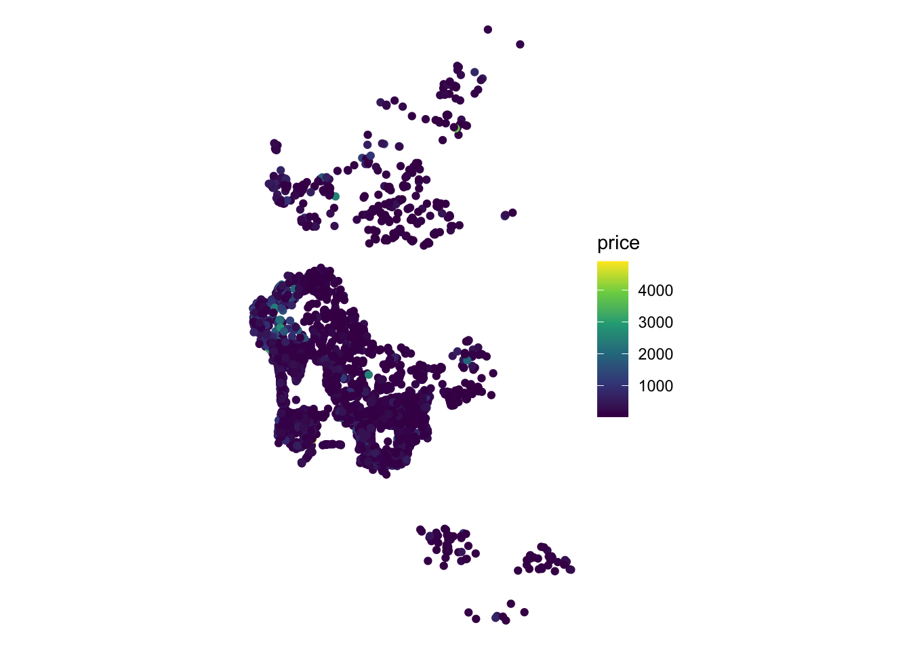
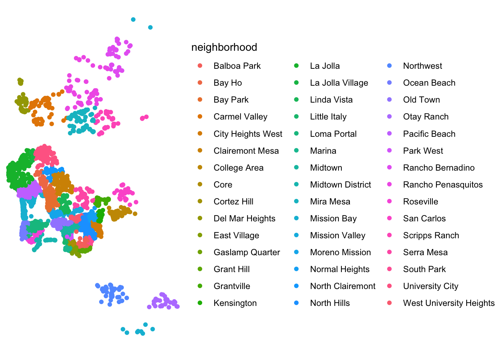
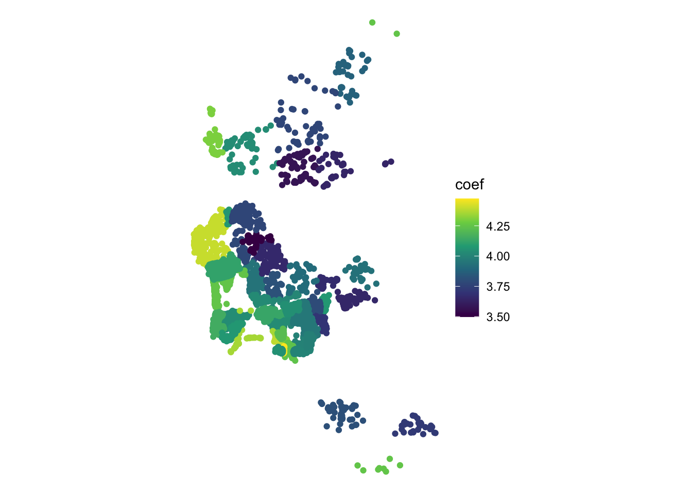

6 Spatial Econometrics
This chapter is based on the following references, which are good follow-up’s on the topic:
- Chapter 11 of the GDS Book, by Rey, Arribas-Bel, and Wolf (2023).
- Session III of Arribas-Bel (2014). Check the “Related readings” section on the session page for more in-depth discussions.
-
Anselin (2007), freely available to download [
pdf]. - The second part of this tutorial assumes you have reviewed the Spatial Weights Section of Arribas-Bel (2019).
6.1 Dependencies
We will rely on the following libraries in this section, all of them included in sec-dependencies:
6.2 Data
To explore ideas in spatial regression, we will the set of Airbnb properties for San Diego (US), borrowed from the “Geographic Data Science with Python” book (see here for more info on the dataset source). This covers the point location of properties advertised on the Airbnb website in the San Diego region.
Let us load the data:
db <- st_read('data/abb_sd/regression_db.geojson')Reading layer `regression_db' from data source
`/Users/franciscorowe/Dropbox/Francisco/uol/teaching/envs453/202324/san/data/abb_sd/regression_db.geojson'
using driver `GeoJSON'
Simple feature collection with 6110 features and 19 fields
Geometry type: POINT
Dimension: XY
Bounding box: xmin: -117.2812 ymin: 32.57349 xmax: -116.9553 ymax: 33.08311
Geodetic CRS: WGS 84The table contains the followig variables:
names(db) [1] "accommodates" "bathrooms" "bedrooms"
[4] "beds" "neighborhood" "pool"
[7] "d2balboa" "coastal" "price"
[10] "log_price" "id" "pg_Apartment"
[13] "pg_Condominium" "pg_House" "pg_Other"
[16] "pg_Townhouse" "rt_Entire_home.apt" "rt_Private_room"
[19] "rt_Shared_room" "geometry" For most of this chapter, we will be exploring determinants and strategies for modelling the price of a property advertised in AirBnb. To get a first taste of what this means, we can create a plot of prices within the area of San Diego:
db %>%
ggplot(aes(color = price)) +
geom_sf() +
scale_color_viridis_c() +
theme_void()
6.3 Non-spatial regression, a refresh
Before we discuss how to explicitly include space into the linear regression framework, let us show how basic regression can be carried out in R, and how you can interpret the results. By no means is this a formal and complete introduction to regression so, if that is what you are looking for, the first part of Gelman and Hill (2006), in particular chapters 3 and 4, are excellent places to check out.
The core idea of linear regression is to explain the variation in a given (dependent) variable as a linear function of a series of other (explanatory) variables. For example, in our case, we may want to express/explain the price of a property advertised on AirBnb as a function of some of its characteristics, such as the number of people it accommodates, and how many bathrooms, bedrooms and beds it features. At the individual level, we can express this as:
\[ \log(P_i) = \alpha + \beta_1 Acc_i + \beta_2 Bath_i + \beta_3 Bedr_i + \beta_4 Beds_i + \epsilon_i \]
where \(P_i\) is the price of house \(i\), \(Acc_i\), \(Bath_i\), \(Bedr_i\) and \(Beds_i\) are the count of people it accommodates, bathrooms, bedrooms and beds that house \(i\) has, respectively. The parameters \(\beta_{1,2, 3, 4}\) give us information about in which way and to what extent each variable is related to the price, and \(\alpha\), the constant term, is the average house price when all the other variables are zero. The term \(\epsilon_i\) is usually referred to as the “error” and captures elements that influence the price of a house but are not accounted for explicitly. We can also express this relation in matrix form, excluding subindices for \(i\) as:
\[ \log(P) = \alpha + \beta_1 Acc + \beta_2 Bath + \beta_3 Bedr + \beta_4 Beds + \epsilon \] where each term can be interpreted in terms of vectors instead of scalars (wit the exception of the parameters \((\alpha, \beta_{1, 2, 3, 4})\), which are scalars). Note we are using the logarithm of the price, since this allows us to interpret the coefficients as roughly the percentage change induced by a unit increase in the explanatory variable of the estimate.
Remember a regression can be seen as a multivariate extension of bivariate correlations. Indeed, one way to interpret the \(\beta_k\) coefficients in the equation above is as the degree of correlation between the explanatory variable \(k\) and the dependent variable, keeping all the other explanatory variables constant. When you calculate simple bivariate correlations, the coefficient of a variable is picking up the correlation between the variables, but it is also subsuming into it variation associated with other correlated variables –also called confounding factors[^06-spatial-econometrics-1]. Regression allows you to isolate the distinct effect that a single variable has on the dependent one, once we control for those other variables.
Practically speaking, running linear regressions in R is straightforward. For example, to fit the model specified in the equation above, we only need one line of code:
m1 <- lm('log_price ~ accommodates + bathrooms + bedrooms + beds', db)We use the command lm, for linear model, and specify the equation we want to fit using a string that relates the dependent variable (the log of the price, log_price) with a set of explanatory ones (accommodates, bathrooms, bedrooms, beds) by using a tilde ~ that is akin to the \(=\) symbol in the mathematical equation above. Since we are using names of variables that are stored in a table, we need to pass the table object (db) as well.
In order to inspect the results of the model, the quickest way is to call summary:
summary(m1)
Call:
lm(formula = "log_price ~ accommodates + bathrooms + bedrooms + beds",
data = db)
Residuals:
Min 1Q Median 3Q Max
-2.8486 -0.3234 -0.0095 0.3023 3.3975
Coefficients:
Estimate Std. Error t value Pr(>|t|)
(Intercept) 4.018133 0.013947 288.10 <2e-16 ***
accommodates 0.176851 0.005323 33.23 <2e-16 ***
bathrooms 0.150981 0.012526 12.05 <2e-16 ***
bedrooms 0.111700 0.012537 8.91 <2e-16 ***
beds -0.076974 0.007927 -9.71 <2e-16 ***
---
Signif. codes: 0 '***' 0.001 '**' 0.01 '*' 0.05 '.' 0.1 ' ' 1
Residual standard error: 0.5366 on 6105 degrees of freedom
Multiple R-squared: 0.5583, Adjusted R-squared: 0.558
F-statistic: 1929 on 4 and 6105 DF, p-value: < 2.2e-16A full detailed explanation of the output is beyond the scope of the chapter, but we will highlight the relevant bits for our main purpose. This is concentrated on the Coefficients section, which gives us the estimates for the \(\beta_k\) coefficients in our model. These estimates are the raw equivalent of the correlation coefficient between each explanatory variable and the dependent one, once the “polluting” effect of the other variables included in the model has been accounted for1. Results are as expected for the most part: houses tend to be significantly more expensive if they accommodate more people (an extra person increases the price by 17.7%, approximately), have more bathrooms (15.1%), or bedrooms (11.2%). Perhaps counter intuitively, an extra bed available seems to decrease the price by about -7.7%. However, keep in mind that this is the case, everything else equal. Hence, more beds per room and bathroom (ie. a more crowded house) is a bit cheaper.
1 Keep in mind that regression is no magic. We are only discounting the effect of other confounding factors that we include in the model, not of all potentially confounding factors.
6.4 Spatial regression: a (very) first dip
Spatial regression is about explicitly introducing space or geographical context into the statistical framework of a regression. Conceptually, we want to introduce space into our model whenever we think it plays an important role in the process we are interested in, or when space can act as a reasonable proxy for other factors we cannot but should include in our model. As an example of the former, we can imagine how houses at the seafront are probably more expensive than those in the second row, given their better views. To illustrate the latter, we can think of how the character of a neighborhood is important in determining the price of a house; however, it is very hard to identify and quantify “character” per se, although it might be easier to get at its spatial variation, hence a case of space as a proxy.
Spatial regression is a large field of development in the econometrics and statistics literature. In this brief introduction, we will consider two related but very different processes that give rise to spatial effects: spatial heterogeneity and spatial dependence. For more rigorous treatments of the topics introduced here, the reader is referred to Anselin (2003), Anselin and Rey (2014), and Gibbons, Overman, and Patacchini (2014).
6.5 Spatial heterogeneity
Spatial heterogeneity (SH) arises when we cannot safely assume the process we are studying operates under the same “rules” throughout the geography of interest. In other words, we can observe SH when there are effects on the outcome variable that are intrinsically linked to specific locations. A good example of this is the case of seafront houses above: we are trying to model the price of a house and, the fact some houses are located under certain conditions (i.e. by the sea), makes their price behave differently. This somewhat abstract concept of SH can be made operational in a model in several ways. We will explore the following two: spatial fixed-effects (FE); and spatial regimes, which is a generalization of FE.
Spatial FE
Let us consider the house price example from the previous section to introduce a more general illustration that relates to the second motivation for spatial effects (“space as a proxy”). Given we are only including two explanatory variables in the model, it is likely we are missing some important factors that play a role at determining the price at which a house is sold. Some of them, however, are likely to vary systematically over space (e.g. different neighborhood characteristics). If that is the case, we can control for those unobserved factors by using traditional dummy variables but basing their creation on a spatial rule. For example, let us include a binary variable for every neighbourhood, as provided by AirBnB, indicating whether a given house is located within such area (1) or not (0). Neighbourhood membership is expressed on the neighborhood column:
db %>%
ggplot(aes(color = neighborhood)) +
geom_sf() +
theme_void()
Mathematically, we are now fitting the following equation:
\[ \log(P_i) = \alpha_r + \beta_1 Acc_i + \beta_2 Bath_i + \beta_3 Bedr_i + \beta_4 Beds_i + \epsilon_i \]
where the main difference is that we are now allowing the constant term, \(\alpha\), to vary by neighbourhood \(r\), \(\alpha_r\).
Programmatically, we can fit this model with lm:
# Include `-1` to eliminate the constant term and include a dummy for every area
m2 <- lm(
'log_price ~ neighborhood + accommodates + bathrooms + bedrooms + beds - 1',
db
)
summary(m2)
Call:
lm(formula = "log_price ~ neighborhood + accommodates + bathrooms + bedrooms + beds - 1",
data = db)
Residuals:
Min 1Q Median 3Q Max
-2.4549 -0.2920 -0.0203 0.2741 3.5323
Coefficients:
Estimate Std. Error t value Pr(>|t|)
neighborhoodBalboa Park 3.994775 0.036539 109.33 <2e-16 ***
neighborhoodBay Ho 3.780025 0.086081 43.91 <2e-16 ***
neighborhoodBay Park 3.941847 0.055788 70.66 <2e-16 ***
neighborhoodCarmel Valley 4.034052 0.062811 64.23 <2e-16 ***
neighborhoodCity Heights West 3.698788 0.065502 56.47 <2e-16 ***
neighborhoodClairemont Mesa 3.658339 0.051438 71.12 <2e-16 ***
neighborhoodCollege Area 3.649859 0.064979 56.17 <2e-16 ***
neighborhoodCore 4.433447 0.058864 75.32 <2e-16 ***
neighborhoodCortez Hill 4.294790 0.057648 74.50 <2e-16 ***
neighborhoodDel Mar Heights 4.300659 0.060912 70.61 <2e-16 ***
neighborhoodEast Village 4.241146 0.032019 132.46 <2e-16 ***
neighborhoodGaslamp Quarter 4.473863 0.052493 85.23 <2e-16 ***
neighborhoodGrant Hill 4.001481 0.058825 68.02 <2e-16 ***
neighborhoodGrantville 3.664989 0.080168 45.72 <2e-16 ***
neighborhoodKensington 4.073520 0.087322 46.65 <2e-16 ***
neighborhoodLa Jolla 4.400145 0.026772 164.36 <2e-16 ***
neighborhoodLa Jolla Village 4.066151 0.087263 46.60 <2e-16 ***
neighborhoodLinda Vista 3.817940 0.063128 60.48 <2e-16 ***
neighborhoodLittle Italy 4.390651 0.052433 83.74 <2e-16 ***
neighborhoodLoma Portal 4.034473 0.036173 111.53 <2e-16 ***
neighborhoodMarina 4.046133 0.052178 77.55 <2e-16 ***
neighborhoodMidtown 4.032038 0.030280 133.16 <2e-16 ***
neighborhoodMidtown District 4.356943 0.071756 60.72 <2e-16 ***
neighborhoodMira Mesa 3.570523 0.061543 58.02 <2e-16 ***
neighborhoodMission Bay 4.251309 0.023318 182.32 <2e-16 ***
neighborhoodMission Valley 4.012410 0.083766 47.90 <2e-16 ***
neighborhoodMoreno Mission 4.028288 0.063342 63.59 <2e-16 ***
neighborhoodNormal Heights 3.791895 0.054730 69.28 <2e-16 ***
neighborhoodNorth Clairemont 3.498107 0.076432 45.77 <2e-16 ***
neighborhoodNorth Hills 3.959403 0.026823 147.61 <2e-16 ***
neighborhoodNorthwest 3.810201 0.078158 48.75 <2e-16 ***
neighborhoodOcean Beach 4.152695 0.032352 128.36 <2e-16 ***
neighborhoodOld Town 4.127737 0.046523 88.72 <2e-16 ***
neighborhoodOtay Ranch 3.722902 0.091633 40.63 <2e-16 ***
neighborhoodPacific Beach 4.116749 0.022711 181.27 <2e-16 ***
neighborhoodPark West 4.216829 0.050370 83.72 <2e-16 ***
neighborhoodRancho Bernadino 3.873962 0.080780 47.96 <2e-16 ***
neighborhoodRancho Penasquitos 3.772037 0.068808 54.82 <2e-16 ***
neighborhoodRoseville 4.070468 0.065299 62.34 <2e-16 ***
neighborhoodSan Carlos 3.935042 0.093205 42.22 <2e-16 ***
neighborhoodScripps Ranch 3.641239 0.085190 42.74 <2e-16 ***
neighborhoodSerra Mesa 3.912127 0.066630 58.71 <2e-16 ***
neighborhoodSouth Park 3.987019 0.060141 66.30 <2e-16 ***
neighborhoodUniversity City 3.772504 0.039638 95.17 <2e-16 ***
neighborhoodWest University Heights 4.043161 0.048238 83.82 <2e-16 ***
accommodates 0.150283 0.005086 29.55 <2e-16 ***
bathrooms 0.132287 0.011886 11.13 <2e-16 ***
bedrooms 0.147631 0.011960 12.34 <2e-16 ***
beds -0.074622 0.007405 -10.08 <2e-16 ***
---
Signif. codes: 0 '***' 0.001 '**' 0.01 '*' 0.05 '.' 0.1 ' ' 1
Residual standard error: 0.4971 on 6061 degrees of freedom
Multiple R-squared: 0.9904, Adjusted R-squared: 0.9904
F-statistic: 1.28e+04 on 49 and 6061 DF, p-value: < 2.2e-16Econometrically speaking, what the postcode FE we have introduced imply is that, instead of comparing all house prices across San Diego as equal, we only derive variation from within each postcode. In our particular case, estimating spatial FE in our particular example also gives you an indirect measure of area desirability: since they are simple dummies in a regression explaining the price of a house, their estimate tells us about how much people are willing to pay to live in a given area. We can visualise this “geography of desirability” by plotting the estimates of each fixed effect on a map:
# Extract neighborhood names from coefficients
nei.names <- m2$coefficients %>%
as.data.frame() %>%
row.names() %>%
str_replace("neighborhood", "")
# Set up as Data Frame
nei.fes <- data.frame(
coef = m2$coefficients,
nei = nei.names,
row.names = nei.names
) %>%
right_join(
db, by = c("nei" = "neighborhood")
)
# Plot
nei.fes %>%
st_as_sf() %>%
ggplot(aes(color = coef)) +
geom_sf() +
scale_color_viridis_c() +
theme_void()
We can see how neighborhoods in the left (west) tend to have higher prices. What we can’t see, but it is represented there if you are familiar with the geography of San Diego, is that the city is bounded by the Pacific ocean on the left, suggesting neighbourhoods by the beach tend to be more expensive.
Remember that the interpretation of a \(\beta_k\) coefficient is the effect of variable \(k\), given all the other explanatory variables included remain constant. By including a single variable for each area, we are effectively forcing the model to compare as equal only house prices that share the same value for each variable; in other words, only houses located within the same area. Introducing FE affords you a higher degree of isolation of the effects of the variables you introduce in your model because you can control for unobserved effects that align spatially with the distribution of the FE you introduce (by neighbourhood, in our case).
Spatial regimes
At the core of estimating spatial FEs is the idea that, instead of assuming the dependent variable behaves uniformly over space, there are systematic effects following a geographical pattern that affect its behaviour. In other words, spatial FEs introduce econometrically the notion of spatial heterogeneity. They do this in the simplest possible form: by allowing the constant term to vary geographically. The other elements of the regression are left untouched and hence apply uniformly across space. The idea of spatial regimes (SRs) is to generalize the spatial FE approach to allow not only the constant term to vary but also any other explanatory variable. This implies that the equation we will be estimating is: \[\log(P_i) = \alpha_r + \beta_{1r} Acc_i + \beta_{2r} Bath_i + \beta_{3r} Bedr_i + \beta_{4r} Beds_i + \epsilon_i\]
where we are not only allowing the constant term to vary by region (\(\alpha_r\)), but also every other parameter (\(\beta_{kr}\)).
Also, given we are going to allow every coefficient to vary by regime, we will need to explicitly set a constant term that we can allow to vary:
db$one <- 1Then, the estimation leverages the capabilities in model description of R formulas:
# `:` notation implies interaction variables
m3 <- lm(
'log_price ~ (one + accommodates + bathrooms + bedrooms + beds):(neighborhood)',
db
)
summary(m3)
Call:
lm(formula = "log_price ~ (one + accommodates + bathrooms + bedrooms + beds):(neighborhood)",
data = db)
Residuals:
Min 1Q Median 3Q Max
-2.5528 -0.2921 -0.0163 0.2586 3.1874
Coefficients: (1 not defined because of singularities)
Estimate Std. Error t value
(Intercept) 4.012160 0.122261 32.816
one:neighborhoodBalboa Park 0.128350 0.145826 0.880
one:neighborhoodBay Ho -0.202575 0.254393 -0.796
one:neighborhoodBay Park -0.272843 0.174512 -1.563
one:neighborhoodCarmel Valley -0.063356 0.164404 -0.385
one:neighborhoodCity Heights West -0.096400 0.205758 -0.469
one:neighborhoodClairemont Mesa -0.639595 0.183891 -3.478
one:neighborhoodCollege Area -0.185039 0.207335 -0.892
one:neighborhoodCore 0.416563 0.223962 1.860
one:neighborhoodCortez Hill 0.309752 0.193169 1.604
one:neighborhoodDel Mar Heights 0.259677 0.182046 1.426
one:neighborhoodEast Village 0.205331 0.147158 1.395
one:neighborhoodGaslamp Quarter -1.156797 0.282853 -4.090
one:neighborhoodGrant Hill -0.077324 0.200580 -0.386
one:neighborhoodGrantville -0.355260 0.278718 -1.275
one:neighborhoodKensington -0.252743 0.248147 -1.019
one:neighborhoodLa Jolla 0.380059 0.128014 2.969
one:neighborhoodLa Jolla Village 0.027119 0.291318 0.093
one:neighborhoodLinda Vista -0.448116 0.202151 -2.217
one:neighborhoodLittle Italy 0.384100 0.188630 2.036
one:neighborhoodLoma Portal 0.014552 0.148157 0.098
one:neighborhoodMarina -0.549055 0.198350 -2.768
one:neighborhoodMidtown 0.071392 0.134620 0.530
one:neighborhoodMidtown District -0.180003 0.219627 -0.820
one:neighborhoodMira Mesa -0.596573 0.205262 -2.906
one:neighborhoodMission Bay 0.399054 0.128693 3.101
one:neighborhoodMission Valley -0.249279 0.288450 -0.864
one:neighborhoodMoreno Mission 0.268901 0.222999 1.206
one:neighborhoodNormal Heights -0.253917 0.210697 -1.205
one:neighborhoodNorth Clairemont -0.404436 0.221559 -1.825
one:neighborhoodNorth Hills -0.103473 0.136994 -0.755
one:neighborhoodNorthwest 0.198074 0.284402 0.696
one:neighborhoodOcean Beach 0.192554 0.136493 1.411
one:neighborhoodOld Town -0.062746 0.157153 -0.399
one:neighborhoodOtay Ranch -0.358005 0.232826 -1.538
one:neighborhoodPacific Beach 0.113854 0.129413 0.880
one:neighborhoodPark West 0.154992 0.170398 0.910
one:neighborhoodRancho Bernadino -0.019347 0.194468 -0.099
one:neighborhoodRancho Penasquitos -0.401257 0.163315 -2.457
one:neighborhoodRoseville 0.120010 0.182676 0.657
one:neighborhoodSan Carlos -0.589123 0.284463 -2.071
one:neighborhoodScripps Ranch -0.026842 0.215965 -0.124
one:neighborhoodSerra Mesa -0.283949 0.207741 -1.367
one:neighborhoodSouth Park -0.181786 0.226828 -0.801
one:neighborhoodUniversity City -0.298526 0.161655 -1.847
one:neighborhoodWest University Heights NA NA NA
accommodates:neighborhoodBalboa Park 0.097052 0.024632 3.940
accommodates:neighborhoodBay Ho -0.017961 0.089598 -0.200
accommodates:neighborhoodBay Park 0.155715 0.063773 2.442
accommodates:neighborhoodCarmel Valley 0.151990 0.049440 3.074
accommodates:neighborhoodCity Heights West 0.060303 0.063416 0.951
accommodates:neighborhoodClairemont Mesa 0.260414 0.050425 5.164
accommodates:neighborhoodCollege Area 0.084693 0.053125 1.594
accommodates:neighborhoodCore 0.106661 0.039204 2.721
accommodates:neighborhoodCortez Hill 0.217358 0.037615 5.779
accommodates:neighborhoodDel Mar Heights 0.075776 0.061335 1.235
accommodates:neighborhoodEast Village 0.162155 0.020465 7.924
accommodates:neighborhoodGaslamp Quarter 0.307007 0.053766 5.710
accommodates:neighborhoodGrant Hill 0.278114 0.056238 4.945
accommodates:neighborhoodGrantville 0.124025 0.075028 1.653
accommodates:neighborhoodKensington 0.063298 0.123887 0.511
accommodates:neighborhoodLa Jolla 0.119142 0.015162 7.858
accommodates:neighborhoodLa Jolla Village 0.207085 0.111627 1.855
accommodates:neighborhoodLinda Vista 0.172101 0.076208 2.258
accommodates:neighborhoodLittle Italy 0.230108 0.034432 6.683
accommodates:neighborhoodLoma Portal 0.090991 0.034762 2.618
accommodates:neighborhoodMarina 0.552162 0.045914 12.026
accommodates:neighborhoodMidtown 0.227617 0.023854 9.542
accommodates:neighborhoodMidtown District 0.179989 0.052007 3.461
accommodates:neighborhoodMira Mesa 0.157603 0.082351 1.914
accommodates:neighborhoodMission Bay 0.085754 0.013455 6.373
accommodates:neighborhoodMission Valley 0.099273 0.134176 0.740
accommodates:neighborhoodMoreno Mission 0.145824 0.060631 2.405
accommodates:neighborhoodNormal Heights 0.237177 0.053060 4.470
accommodates:neighborhoodNorth Clairemont 0.188941 0.084060 2.248
accommodates:neighborhoodNorth Hills 0.143390 0.022069 6.497
accommodates:neighborhoodNorthwest 0.022166 0.069235 0.320
accommodates:neighborhoodOcean Beach 0.113995 0.022845 4.990
accommodates:neighborhoodOld Town 0.239088 0.042208 5.665
accommodates:neighborhoodOtay Ranch -0.021530 0.083481 -0.258
accommodates:neighborhoodPacific Beach 0.153379 0.015339 9.999
accommodates:neighborhoodPark West 0.224593 0.045581 4.927
accommodates:neighborhoodRancho Bernadino 0.004730 0.067968 0.070
accommodates:neighborhoodRancho Penasquitos 0.070627 0.060353 1.170
accommodates:neighborhoodRoseville 0.112686 0.060090 1.875
accommodates:neighborhoodSan Carlos -0.140714 0.087777 -1.603
accommodates:neighborhoodScripps Ranch 0.087078 0.035562 2.449
accommodates:neighborhoodSerra Mesa 0.190589 0.075803 2.514
accommodates:neighborhoodSouth Park 0.206833 0.068093 3.038
accommodates:neighborhoodUniversity City 0.067637 0.030097 2.247
accommodates:neighborhoodWest University Heights 0.124850 0.056034 2.228
bathrooms:neighborhoodBalboa Park 0.014875 0.073585 0.202
bathrooms:neighborhoodBay Ho 0.305028 0.225044 1.355
bathrooms:neighborhoodBay Park 0.065043 0.120545 0.540
bathrooms:neighborhoodCarmel Valley 0.205847 0.065237 3.155
bathrooms:neighborhoodCity Heights West -0.129465 0.183389 -0.706
bathrooms:neighborhoodClairemont Mesa 0.418033 0.176111 2.374
bathrooms:neighborhoodCollege Area -0.012095 0.183917 -0.066
bathrooms:neighborhoodCore 0.464974 0.186634 2.491
bathrooms:neighborhoodCortez Hill -0.206708 0.101521 -2.036
bathrooms:neighborhoodDel Mar Heights 0.319046 0.096172 3.317
bathrooms:neighborhoodEast Village 0.312707 0.067204 4.653
bathrooms:neighborhoodGaslamp Quarter 1.459299 0.207669 7.027
bathrooms:neighborhoodGrant Hill 0.040405 0.155867 0.259
bathrooms:neighborhoodGrantville 0.028466 0.234973 0.121
bathrooms:neighborhoodKensington 0.146585 0.188987 0.776
bathrooms:neighborhoodLa Jolla 0.242760 0.026778 9.066
bathrooms:neighborhoodLa Jolla Village -0.296748 0.326257 -0.910
bathrooms:neighborhoodLinda Vista 0.170333 0.143441 1.187
bathrooms:neighborhoodLittle Italy 0.035532 0.111044 0.320
bathrooms:neighborhoodLoma Portal 0.188467 0.082511 2.284
bathrooms:neighborhoodMarina 0.316509 0.219948 1.439
bathrooms:neighborhoodMidtown -0.037771 0.032333 -1.168
bathrooms:neighborhoodMidtown District 0.623515 0.197674 3.154
bathrooms:neighborhoodMira Mesa 0.215939 0.185982 1.161
bathrooms:neighborhoodMission Bay 0.176976 0.035418 4.997
bathrooms:neighborhoodMission Valley -0.009144 0.405637 -0.023
bathrooms:neighborhoodMoreno Mission -0.208248 0.210241 -0.991
bathrooms:neighborhoodNormal Heights 0.017303 0.201580 0.086
bathrooms:neighborhoodNorth Clairemont -0.102553 0.212254 -0.483
bathrooms:neighborhoodNorth Hills 0.098449 0.064065 1.537
bathrooms:neighborhoodNorthwest -0.503592 0.255300 -1.973
bathrooms:neighborhoodOcean Beach 0.082659 0.059578 1.387
bathrooms:neighborhoodOld Town 0.087046 0.096513 0.902
bathrooms:neighborhoodOtay Ranch -0.219480 0.341525 -0.643
bathrooms:neighborhoodPacific Beach 0.116105 0.041006 2.831
bathrooms:neighborhoodPark West 0.198550 0.107749 1.843
bathrooms:neighborhoodRancho Bernadino 0.365674 0.147799 2.474
bathrooms:neighborhoodRancho Penasquitos 0.320715 0.110007 2.915
bathrooms:neighborhoodRoseville -0.053420 0.102487 -0.521
bathrooms:neighborhoodSan Carlos 0.267797 0.214540 1.248
bathrooms:neighborhoodScripps Ranch -0.132692 0.169684 -0.782
bathrooms:neighborhoodSerra Mesa 0.381620 0.197305 1.934
bathrooms:neighborhoodSouth Park 0.087490 0.196486 0.445
bathrooms:neighborhoodUniversity City 0.138271 0.125198 1.104
bathrooms:neighborhoodWest University Heights 0.042035 0.122097 0.344
bedrooms:neighborhoodBalboa Park 0.183347 0.065309 2.807
bedrooms:neighborhoodBay Ho 0.241200 0.170471 1.415
bedrooms:neighborhoodBay Park 0.214111 0.117198 1.827
bedrooms:neighborhoodCarmel Valley -0.073928 0.127976 -0.578
bedrooms:neighborhoodCity Heights West 0.272272 0.176859 1.539
bedrooms:neighborhoodClairemont Mesa -0.046650 0.122263 -0.382
bedrooms:neighborhoodCollege Area -0.055707 0.108958 -0.511
bedrooms:neighborhoodCore -0.069929 0.108896 -0.642
bedrooms:neighborhoodCortez Hill 0.313288 0.101770 3.078
bedrooms:neighborhoodDel Mar Heights 0.111554 0.097639 1.143
bedrooms:neighborhoodEast Village 0.088071 0.056654 1.555
bedrooms:neighborhoodGaslamp Quarter -0.297570 0.090336 -3.294
bedrooms:neighborhoodGrant Hill 0.091300 0.114501 0.797
bedrooms:neighborhoodGrantville 0.221461 0.208950 1.060
bedrooms:neighborhoodKensington 0.450822 0.269641 1.672
bedrooms:neighborhoodLa Jolla 0.166725 0.035423 4.707
bedrooms:neighborhoodLa Jolla Village 0.845318 0.545842 1.549
bedrooms:neighborhoodLinda Vista 0.096413 0.171751 0.561
bedrooms:neighborhoodLittle Italy 0.126794 0.080939 1.567
bedrooms:neighborhoodLoma Portal 0.172480 0.067268 2.564
bedrooms:neighborhoodMarina -0.323085 0.137046 -2.357
bedrooms:neighborhoodMidtown 0.172711 0.044927 3.844
bedrooms:neighborhoodMidtown District 0.088181 0.134514 0.656
bedrooms:neighborhoodMira Mesa -0.029149 0.206406 -0.141
bedrooms:neighborhoodMission Bay 0.197484 0.032472 6.082
bedrooms:neighborhoodMission Valley 0.393256 0.342308 1.149
bedrooms:neighborhoodMoreno Mission -0.081003 0.158933 -0.510
bedrooms:neighborhoodNormal Heights 0.199088 0.104514 1.905
bedrooms:neighborhoodNorth Clairemont 0.176509 0.183702 0.961
bedrooms:neighborhoodNorth Hills 0.283826 0.047159 6.018
bedrooms:neighborhoodNorthwest 0.411641 0.160558 2.564
bedrooms:neighborhoodOcean Beach 0.220345 0.055039 4.003
bedrooms:neighborhoodOld Town 0.209031 0.099966 2.091
bedrooms:neighborhoodOtay Ranch 0.772212 0.354230 2.180
bedrooms:neighborhoodPacific Beach 0.077503 0.036735 2.110
bedrooms:neighborhoodPark West -0.127891 0.110497 -1.157
bedrooms:neighborhoodRancho Bernadino -0.209594 0.160210 -1.308
bedrooms:neighborhoodRancho Penasquitos 0.107599 0.138183 0.779
bedrooms:neighborhoodRoseville 0.395961 0.157406 2.516
bedrooms:neighborhoodSan Carlos 0.239713 0.150420 1.594
bedrooms:neighborhoodScripps Ranch -0.045580 0.102624 -0.444
bedrooms:neighborhoodSerra Mesa 0.202756 0.163958 1.237
bedrooms:neighborhoodSouth Park 0.080548 0.112861 0.714
bedrooms:neighborhoodUniversity City 0.124090 0.120386 1.031
bedrooms:neighborhoodWest University Heights 0.011105 0.095137 0.117
beds:neighborhoodBalboa Park 0.013322 0.045740 0.291
beds:neighborhoodBay Ho 0.037070 0.133299 0.278
beds:neighborhoodBay Park 0.011091 0.108863 0.102
beds:neighborhoodCarmel Valley 0.086393 0.076151 1.135
beds:neighborhoodCity Heights West 0.076520 0.132072 0.579
beds:neighborhoodClairemont Mesa -0.163512 0.090244 -1.812
beds:neighborhoodCollege Area 0.228165 0.084147 2.712
beds:neighborhoodCore -0.080211 0.078673 -1.020
beds:neighborhoodCortez Hill -0.039031 0.042752 -0.913
beds:neighborhoodDel Mar Heights -0.021375 0.071330 -0.300
beds:neighborhoodEast Village -0.174883 0.040811 -4.285
beds:neighborhoodGaslamp Quarter -0.064063 0.088752 -0.722
beds:neighborhoodGrant Hill -0.178920 0.067398 -2.655
beds:neighborhoodGrantville -0.003795 0.126551 -0.030
beds:neighborhoodKensington -0.005431 0.175724 -0.031
beds:neighborhoodLa Jolla -0.104906 0.022470 -4.669
beds:neighborhoodLa Jolla Village -0.385895 0.315094 -1.225
beds:neighborhoodLinda Vista 0.032215 0.073896 0.436
beds:neighborhoodLittle Italy -0.145613 0.029817 -4.884
beds:neighborhoodLoma Portal -0.013033 0.059097 -0.221
beds:neighborhoodMarina -0.210771 0.113913 -1.850
beds:neighborhoodMidtown -0.143254 0.036531 -3.921
beds:neighborhoodMidtown District -0.132655 0.090595 -1.464
beds:neighborhoodMira Mesa 0.097629 0.113225 0.862
beds:neighborhoodMission Bay -0.061315 0.017727 -3.459
beds:neighborhoodMission Valley 0.073187 0.235760 0.310
beds:neighborhoodMoreno Mission 0.195918 0.116748 1.678
beds:neighborhoodNormal Heights -0.185827 0.062062 -2.994
beds:neighborhoodNorth Clairemont -0.060468 0.188694 -0.320
beds:neighborhoodNorth Hills -0.113150 0.032768 -3.453
beds:neighborhoodNorthwest 0.116746 0.131088 0.891
beds:neighborhoodOcean Beach -0.048848 0.037433 -1.305
beds:neighborhoodOld Town -0.158066 0.077352 -2.043
beds:neighborhoodOtay Ranch 0.071485 0.259986 0.275
beds:neighborhoodPacific Beach -0.025064 0.023165 -1.082
beds:neighborhoodPark West -0.049627 0.063967 -0.776
beds:neighborhoodRancho Bernadino 0.270293 0.092164 2.933
beds:neighborhoodRancho Penasquitos 0.011344 0.091156 0.124
beds:neighborhoodRoseville -0.085205 0.087365 -0.975
beds:neighborhoodSan Carlos 0.550169 0.167389 3.287
beds:neighborhoodScripps Ranch 0.219496 0.122439 1.793
beds:neighborhoodSerra Mesa -0.293629 0.189261 -1.551
beds:neighborhoodSouth Park -0.020083 0.109799 -0.183
beds:neighborhoodUniversity City 0.124224 0.062916 1.974
beds:neighborhoodWest University Heights 0.143248 0.096150 1.490
Pr(>|t|)
(Intercept) < 2e-16 ***
one:neighborhoodBalboa Park 0.378810
one:neighborhoodBay Ho 0.425887
one:neighborhoodBay Park 0.117997
one:neighborhoodCarmel Valley 0.699978
one:neighborhoodCity Heights West 0.639437
one:neighborhoodClairemont Mesa 0.000509 ***
one:neighborhoodCollege Area 0.372180
one:neighborhoodCore 0.062939 .
one:neighborhoodCortez Hill 0.108871
one:neighborhoodDel Mar Heights 0.153795
one:neighborhoodEast Village 0.162975
one:neighborhoodGaslamp Quarter 4.38e-05 ***
one:neighborhoodGrant Hill 0.699880
one:neighborhoodGrantville 0.202493
one:neighborhoodKensington 0.308471
one:neighborhoodLa Jolla 0.003001 **
one:neighborhoodLa Jolla Village 0.925835
one:neighborhoodLinda Vista 0.026679 *
one:neighborhoodLittle Italy 0.041769 *
one:neighborhoodLoma Portal 0.921764
one:neighborhoodMarina 0.005656 **
one:neighborhoodMidtown 0.595908
one:neighborhoodMidtown District 0.412485
one:neighborhoodMira Mesa 0.003670 **
one:neighborhoodMission Bay 0.001939 **
one:neighborhoodMission Valley 0.387513
one:neighborhoodMoreno Mission 0.227928
one:neighborhoodNormal Heights 0.228202
one:neighborhoodNorth Clairemont 0.067990 .
one:neighborhoodNorth Hills 0.450091
one:neighborhoodNorthwest 0.486169
one:neighborhoodOcean Beach 0.158381
one:neighborhoodOld Town 0.689710
one:neighborhoodOtay Ranch 0.124188
one:neighborhoodPacific Beach 0.379016
one:neighborhoodPark West 0.363079
one:neighborhoodRancho Bernadino 0.920756
one:neighborhoodRancho Penasquitos 0.014041 *
one:neighborhoodRoseville 0.511237
one:neighborhoodSan Carlos 0.038402 *
one:neighborhoodScripps Ranch 0.901090
one:neighborhoodSerra Mesa 0.171727
one:neighborhoodSouth Park 0.422917
one:neighborhoodUniversity City 0.064843 .
one:neighborhoodWest University Heights NA
accommodates:neighborhoodBalboa Park 8.24e-05 ***
accommodates:neighborhoodBay Ho 0.841129
accommodates:neighborhoodBay Park 0.014647 *
accommodates:neighborhoodCarmel Valley 0.002120 **
accommodates:neighborhoodCity Heights West 0.341685
accommodates:neighborhoodClairemont Mesa 2.49e-07 ***
accommodates:neighborhoodCollege Area 0.110943
accommodates:neighborhoodCore 0.006535 **
accommodates:neighborhoodCortez Hill 7.92e-09 ***
accommodates:neighborhoodDel Mar Heights 0.216716
accommodates:neighborhoodEast Village 2.74e-15 ***
accommodates:neighborhoodGaslamp Quarter 1.18e-08 ***
accommodates:neighborhoodGrant Hill 7.81e-07 ***
accommodates:neighborhoodGrantville 0.098376 .
accommodates:neighborhoodKensington 0.609420
accommodates:neighborhoodLa Jolla 4.61e-15 ***
accommodates:neighborhoodLa Jolla Village 0.063624 .
accommodates:neighborhoodLinda Vista 0.023963 *
accommodates:neighborhoodLittle Italy 2.56e-11 ***
accommodates:neighborhoodLoma Portal 0.008879 **
accommodates:neighborhoodMarina < 2e-16 ***
accommodates:neighborhoodMidtown < 2e-16 ***
accommodates:neighborhoodMidtown District 0.000542 ***
accommodates:neighborhoodMira Mesa 0.055697 .
accommodates:neighborhoodMission Bay 1.99e-10 ***
accommodates:neighborhoodMission Valley 0.459407
accommodates:neighborhoodMoreno Mission 0.016199 *
accommodates:neighborhoodNormal Heights 7.97e-06 ***
accommodates:neighborhoodNorth Clairemont 0.024632 *
accommodates:neighborhoodNorth Hills 8.84e-11 ***
accommodates:neighborhoodNorthwest 0.748867
accommodates:neighborhoodOcean Beach 6.21e-07 ***
accommodates:neighborhoodOld Town 1.54e-08 ***
accommodates:neighborhoodOtay Ranch 0.796490
accommodates:neighborhoodPacific Beach < 2e-16 ***
accommodates:neighborhoodPark West 8.56e-07 ***
accommodates:neighborhoodRancho Bernadino 0.944521
accommodates:neighborhoodRancho Penasquitos 0.241960
accommodates:neighborhoodRoseville 0.060803 .
accommodates:neighborhoodSan Carlos 0.108968
accommodates:neighborhoodScripps Ranch 0.014369 *
accommodates:neighborhoodSerra Mesa 0.011955 *
accommodates:neighborhoodSouth Park 0.002396 **
accommodates:neighborhoodUniversity City 0.024659 *
accommodates:neighborhoodWest University Heights 0.025910 *
bathrooms:neighborhoodBalboa Park 0.839806
bathrooms:neighborhoodBay Ho 0.175338
bathrooms:neighborhoodBay Park 0.589509
bathrooms:neighborhoodCarmel Valley 0.001611 **
bathrooms:neighborhoodCity Heights West 0.480243
bathrooms:neighborhoodClairemont Mesa 0.017643 *
bathrooms:neighborhoodCollege Area 0.947567
bathrooms:neighborhoodCore 0.012753 *
bathrooms:neighborhoodCortez Hill 0.041784 *
bathrooms:neighborhoodDel Mar Heights 0.000914 ***
bathrooms:neighborhoodEast Village 3.34e-06 ***
bathrooms:neighborhoodGaslamp Quarter 2.35e-12 ***
bathrooms:neighborhoodGrant Hill 0.795468
bathrooms:neighborhoodGrantville 0.903578
bathrooms:neighborhoodKensington 0.437993
bathrooms:neighborhoodLa Jolla < 2e-16 ***
bathrooms:neighborhoodLa Jolla Village 0.363095
bathrooms:neighborhoodLinda Vista 0.235088
bathrooms:neighborhoodLittle Italy 0.748992
bathrooms:neighborhoodLoma Portal 0.022399 *
bathrooms:neighborhoodMarina 0.150200
bathrooms:neighborhoodMidtown 0.242779
bathrooms:neighborhoodMidtown District 0.001617 **
bathrooms:neighborhoodMira Mesa 0.245659
bathrooms:neighborhoodMission Bay 6.00e-07 ***
bathrooms:neighborhoodMission Valley 0.982016
bathrooms:neighborhoodMoreno Mission 0.321960
bathrooms:neighborhoodNormal Heights 0.931598
bathrooms:neighborhoodNorth Clairemont 0.628997
bathrooms:neighborhoodNorth Hills 0.124417
bathrooms:neighborhoodNorthwest 0.048594 *
bathrooms:neighborhoodOcean Beach 0.165371
bathrooms:neighborhoodOld Town 0.367140
bathrooms:neighborhoodOtay Ranch 0.520477
bathrooms:neighborhoodPacific Beach 0.004650 **
bathrooms:neighborhoodPark West 0.065420 .
bathrooms:neighborhoodRancho Bernadino 0.013384 *
bathrooms:neighborhoodRancho Penasquitos 0.003566 **
bathrooms:neighborhoodRoseville 0.602221
bathrooms:neighborhoodSan Carlos 0.211993
bathrooms:neighborhoodScripps Ranch 0.434248
bathrooms:neighborhoodSerra Mesa 0.053141 .
bathrooms:neighborhoodSouth Park 0.656138
bathrooms:neighborhoodUniversity City 0.269455
bathrooms:neighborhoodWest University Heights 0.730652
bedrooms:neighborhoodBalboa Park 0.005011 **
bedrooms:neighborhoodBay Ho 0.157151
bedrooms:neighborhoodBay Park 0.067764 .
bedrooms:neighborhoodCarmel Valley 0.563507
bedrooms:neighborhoodCity Heights West 0.123740
bedrooms:neighborhoodClairemont Mesa 0.702806
bedrooms:neighborhoodCollege Area 0.609182
bedrooms:neighborhoodCore 0.520791
bedrooms:neighborhoodCortez Hill 0.002091 **
bedrooms:neighborhoodDel Mar Heights 0.253288
bedrooms:neighborhoodEast Village 0.120105
bedrooms:neighborhoodGaslamp Quarter 0.000993 ***
bedrooms:neighborhoodGrant Hill 0.425266
bedrooms:neighborhoodGrantville 0.289243
bedrooms:neighborhoodKensington 0.094590 .
bedrooms:neighborhoodLa Jolla 2.58e-06 ***
bedrooms:neighborhoodLa Jolla Village 0.121520
bedrooms:neighborhoodLinda Vista 0.574579
bedrooms:neighborhoodLittle Italy 0.117274
bedrooms:neighborhoodLoma Portal 0.010370 *
bedrooms:neighborhoodMarina 0.018431 *
bedrooms:neighborhoodMidtown 0.000122 ***
bedrooms:neighborhoodMidtown District 0.512137
bedrooms:neighborhoodMira Mesa 0.887701
bedrooms:neighborhoodMission Bay 1.26e-09 ***
bedrooms:neighborhoodMission Valley 0.250670
bedrooms:neighborhoodMoreno Mission 0.610302
bedrooms:neighborhoodNormal Heights 0.056842 .
bedrooms:neighborhoodNorth Clairemont 0.336669
bedrooms:neighborhoodNorth Hills 1.87e-09 ***
bedrooms:neighborhoodNorthwest 0.010377 *
bedrooms:neighborhoodOcean Beach 6.32e-05 ***
bedrooms:neighborhoodOld Town 0.036570 *
bedrooms:neighborhoodOtay Ranch 0.029299 *
bedrooms:neighborhoodPacific Beach 0.034919 *
bedrooms:neighborhoodPark West 0.247150
bedrooms:neighborhoodRancho Bernadino 0.190841
bedrooms:neighborhoodRancho Penasquitos 0.436205
bedrooms:neighborhoodRoseville 0.011911 *
bedrooms:neighborhoodSan Carlos 0.111073
bedrooms:neighborhoodScripps Ranch 0.656951
bedrooms:neighborhoodSerra Mesa 0.216272
bedrooms:neighborhoodSouth Park 0.475443
bedrooms:neighborhoodUniversity City 0.302694
bedrooms:neighborhoodWest University Heights 0.907079
beds:neighborhoodBalboa Park 0.770871
beds:neighborhoodBay Ho 0.780950
beds:neighborhoodBay Park 0.918856
beds:neighborhoodCarmel Valley 0.256631
beds:neighborhoodCity Heights West 0.562357
beds:neighborhoodClairemont Mesa 0.070055 .
beds:neighborhoodCollege Area 0.006717 **
beds:neighborhoodCore 0.307987
beds:neighborhoodCortez Hill 0.361302
beds:neighborhoodDel Mar Heights 0.764449
beds:neighborhoodEast Village 1.86e-05 ***
beds:neighborhoodGaslamp Quarter 0.470435
beds:neighborhoodGrant Hill 0.007960 **
beds:neighborhoodGrantville 0.976078
beds:neighborhoodKensington 0.975344
beds:neighborhoodLa Jolla 3.10e-06 ***
beds:neighborhoodLa Jolla Village 0.220739
beds:neighborhoodLinda Vista 0.662889
beds:neighborhoodLittle Italy 1.07e-06 ***
beds:neighborhoodLoma Portal 0.825463
beds:neighborhoodMarina 0.064324 .
beds:neighborhoodMidtown 8.90e-05 ***
beds:neighborhoodMidtown District 0.143173
beds:neighborhoodMira Mesa 0.388579
beds:neighborhoodMission Bay 0.000546 ***
beds:neighborhoodMission Valley 0.756247
beds:neighborhoodMoreno Mission 0.093375 .
beds:neighborhoodNormal Heights 0.002763 **
beds:neighborhoodNorth Clairemont 0.748634
beds:neighborhoodNorth Hills 0.000558 ***
beds:neighborhoodNorthwest 0.373186
beds:neighborhoodOcean Beach 0.191957
beds:neighborhoodOld Town 0.041051 *
beds:neighborhoodOtay Ranch 0.783359
beds:neighborhoodPacific Beach 0.279326
beds:neighborhoodPark West 0.437885
beds:neighborhoodRancho Bernadino 0.003373 **
beds:neighborhoodRancho Penasquitos 0.900966
beds:neighborhoodRoseville 0.329465
beds:neighborhoodSan Carlos 0.001019 **
beds:neighborhoodScripps Ranch 0.073072 .
beds:neighborhoodSerra Mesa 0.120848
beds:neighborhoodSouth Park 0.854878
beds:neighborhoodUniversity City 0.048378 *
beds:neighborhoodWest University Heights 0.136320
---
Signif. codes: 0 '***' 0.001 '**' 0.01 '*' 0.05 '.' 0.1 ' ' 1
Residual standard error: 0.478 on 5885 degrees of freedom
Multiple R-squared: 0.6622, Adjusted R-squared: 0.6494
F-statistic: 51.51 on 224 and 5885 DF, p-value: < 2.2e-16This allows us to get a separate constant term and estimate of the impact of each variable for every neighborhood
6.6 Spatial dependence
As we have just discussed, SH is about effects of phenomena that are explicitly linked to geography and that hence cause spatial variation and clustering of values. This encompasses many of the kinds of spatial effects we may be interested in when we fit linear regressions. However, in other cases, our interest is on the effect of the spatial configuration of the observations, and the extent to which that has an effect on the outcome we are considering. For example, we might think that the price of a house not only depends on the number of bathrooms it has but, if we take number of bathrooms as a proxy for size and status, also whether it is surrounded by other houses with many bathrooms. This kind of spatial effect is fundamentally different from SH in that is it not related to inherent characteristics of the geography but relates to the characteristics of the observations in our dataset and, specially, to their spatial arrangement. We call this phenomenon by which the values of observations are related to each other through distance spatial dependence (Anselin 1988).
Spatial Weights
There are several ways to introduce spatial dependence in an econometric framework, with varying degrees of econometric sophistication (see Anselin 2003 for a good overview). Common to all of them however is the way space is formally encapsulated: through spatial weights matrices (\(W\))2 These are \(NxN\) matrices with zero diagonals and every \(w_{ij}\) cell with a value that represents the degree of spatial connectivity/interaction between observations \(i\) and \(j\). If they are not connected at all, \(w_{ij}=0\), otherwise \(w_{ij}>0\) and we call \(i\) and \(j\) neighbors. The exact value in the latter case depends on the criterium we use to define neighborhood relations. These matrices also tend to be row-standardized so the sum of each row equals to one.
2 If you need to refresh your knowledge on spatial weight matrices, check Block E of Arribas-Bel (2019); Chapter 4 of Rey, Arribas-Bel, and Wolf (2023); or the Spatial Weights Section of Rowe (2022).
A related concept to spatial weight matrices is that of spatial lag. This is an operator that multiplies a given variable \(y\) by a spatial weight matrix:
\[ y_{lag} = W y \]
If \(W\) is row-standardized, \(y_{lag}\) is effectively the average value of \(y\) in the neighborhood of each observation. The individual notation may help clarify this:
\[ y_{lag-i} = \displaystyle \sum_j w_{ij} y_j \]
where \(y_{lag-i}\) is the spatial lag of variable \(y\) at location \(i\), and \(j\) sums over the entire dataset. If \(W\) is row-standardized, \(y_{lag-i}\) becomes an average of \(y\) weighted by the spatial criterium defined in \(W\).
Given that spatial weights matrices are not the focus of this tutorial, we will stick to a very simple case. Since we are dealing with points, we will use \(K\)-nn weights, which take the \(k\) nearest neighbors of each observation as neighbors and assign a value of one, assigning everyone else a zero. We will use \(k=50\) to get a good degree of variation and sensible results.
# Create knn list of each house
hnn <- db %>%
st_coordinates() %>%
as.matrix() %>%
knearneigh(k = 50)
# Create nb object
hnb <- knn2nb(hnn)
# Create spatial weights matrix (note it row-standardizes by default)
hknn <- nb2listw(hnb)We can inspect the weights created by simply typing the name of the object:
hknnCharacteristics of weights list object:
Neighbour list object:
Number of regions: 6110
Number of nonzero links: 305500
Percentage nonzero weights: 0.8183306
Average number of links: 50
Non-symmetric neighbours list
Weights style: W
Weights constants summary:
n nn S0 S1 S2
W 6110 37332100 6110 220.5032 24924.44Exogenous spatial effects
Let us come back to the house price example we have been working with. So far, we have hypothesized that the price of an AirBnb property in San Diego can be explained using information about its own characteristics, and the neighbourhood it belongs to. However, we can hypothesise that the price of a house is also affected by the characteristics of the houses surrounding it. Considering it as a proxy for larger and more luxurious houses, we will use the number of bathrooms of neighboring houses as an additional explanatory variable. This represents the most straightforward way to introduce spatial dependence in a regression, by considering not only a given explanatory variable, but also its spatial lag.
In our example case, in addition to including the number of bathrooms of the property, we will include its spatial lag. In other words, we will be saying that it is not only the number of bathrooms in a house but also that of the surrounding properties that helps explain the final price at which a house is advertised for. Mathematically, this implies estimating the following model:
\[ \log(P_i) = \alpha + \beta_1 Acc_i + \beta_2 Bath_i + \beta_3 Bedr_i + \beta_4 Beds_i+ \beta_5 Bath_{lag-i} + \epsilon_i \]
Let us first compute the spatial lag of bathrooms:
db$w_bathrooms <- lag.listw(hknn, db$bathrooms)And then we can include it in our previous specification. Note that we apply the log to the lag, not the reverse:
Call:
lm(formula = "log_price ~ accommodates + bedrooms + beds + bathrooms + w_bathrooms",
data = db)
Residuals:
Min 1Q Median 3Q Max
-2.8869 -0.3243 -0.0206 0.2931 3.5132
Coefficients:
Estimate Std. Error t value Pr(>|t|)
(Intercept) 3.579448 0.032337 110.692 <2e-16 ***
accommodates 0.173226 0.005233 33.100 <2e-16 ***
bedrooms 0.103116 0.012327 8.365 <2e-16 ***
beds -0.075071 0.007787 -9.641 <2e-16 ***
bathrooms 0.117268 0.012507 9.376 <2e-16 ***
w_bathrooms 0.353021 0.023572 14.976 <2e-16 ***
---
Signif. codes: 0 '***' 0.001 '**' 0.01 '*' 0.05 '.' 0.1 ' ' 1
Residual standard error: 0.5271 on 6104 degrees of freedom
Multiple R-squared: 0.574, Adjusted R-squared: 0.5736
F-statistic: 1645 on 5 and 6104 DF, p-value: < 2.2e-16As we can see, the lag is not only significative and positive, but its effect seems to be even larger that that of the property itself. Taken literally, this implies that the average number of bathrooms in AirBnb’s nearby has a larger effect on the final price of a given AirBnb than its own number of bathrooms. There are several ways to interpret this. One is that, if we take the spatial lag of bathrooms, as we said above, to be a proxy for the types of houses surrounding a property, this is probably a better predictor of how wealthy an area is than the number of bathrooms of a single property, which is more variable. If we also assume that the area where an AirBnb is located has a bigger effect on price than the number of bathrooms, we can start seeing an answer to the apparent puzzle.
A note on more advanced spatial regression
Introducing a spatial lag of an explanatory variable, as we have just seen, is the most straightforward way of incorporating the notion of spatial dependence in a linear regression framework. It does not require additional changes, it can be estimated with OLS, and the interpretation is rather similar to interpreting non-spatial variables. The field of spatial econometrics however is a much broader one and has produced over the last decades many techniques to deal with spatial effects and spatial dependence in different ways. Although this might be an over simplification, one can say that most of such efforts for the case of a single cross-section are focused on two main variations: the spatial lag and the spatial error model. Both are similar to the case we have seen in that they are based on the introduction of a spatial lag, but they differ in the component of the model they modify and affect.
The spatial lag model introduces a spatial lag of the dependent variable. In the example we have covered, this would translate into:
\[ \log(P_i) = \alpha + \rho \log(P_i) + \beta_1 Acc_i + \beta_2 Bath_i + \beta_3 Bedr_i + \beta_4 Beds_i + \epsilon_i \]
Although it might not seem very different from the previous equation, this model violates the exogeneity assumption, crucial for OLS to work.
Equally, the spatial error model includes a spatial lag in the error term of the equation:
\[ \log(P_i) = \alpha + \beta_1 Acc_i + \beta_2 Bath_i + \beta_3 Bedr_i + \beta_4 Beds_i + u_i \]
\[ u_i = u_{lag-i} + \epsilon_i \]
Again, although similar, one can show this specification violates the assumptions about the error term in a classical OLS model.
Both the spatial lag and error model violate some of the assumptions on which OLS relies and thus render the technique unusable. Much of the efforts have thus focused on coming up with alternative methodologies that allow unbiased, robust, and efficient estimation of such models. A survey of those is beyond the scope of this note, but the interested reader is referred to Anselin (1988), Anselin (2003), and Anselin and Rey (2014) for further reference.
6.7 Predicting house prices
So far, we have seen how to exploit the output of a regression model to evaluate the role different variables play in explaining another one of interest. However, once fit, a model can also be used to obtain predictions of the dependent variable given a new set of values for the explanatory variables. We will finish this session by dipping our toes in predicting with linear models.
The core idea is that once you have estimates for the way in which the explanatory variables can be combined to explain the dependent one, you can plug new values on the explanatory side of the model and combine them following the model estimates to obtain predictions. In the example we have worked with, you can imagine this application would be useful to obtain valuations of a house, given we know its characteristics.
Conceptually, predicting in linear regression models involves using the estimates of the parameters to obtain a value for the dependent variable:
\[ \log(\bar{P_i}) = \bar{\alpha} + \bar{\beta_1} Acc_i^* + \bar{\beta_2} Bath_i^* + \bar{\beta_3} Bedr_i^* + \bar{\beta_4} Beds_i^* \] where \(\log(\bar{P_i})\) is our predicted value, and we include the bar sign to note that it is our estimate obtained from fitting the model. We use the \(^*\) sign to note that those can be new values for the explanatory variables, not necessarily those used to fit the model.
Technically speaking, prediction in linear models is relatively streamlined in R. Suppose we are given data for a new house which is to be put on the AirBnb platform. We know it accommodates four people, and has two bedrooms, three beds, and one bathroom. We also know that the surrounding properties have, on average, 1.5 bathrooms. Let us record the data first:
new.house <- data.frame(
accommodates = 4,
bedrooms = 2,
beds = 3,
bathrooms = 1,
w_bathrooms = 1.5
)To obtain the prediction for its price, we can use the predict method:
new.price <- predict(m5, new.house)
new.price 1
4.900168 Now remember we were using the log of the price as dependent variable. If we want to recover the actual price of the house, we need to take its exponent:
exp(new.price) 1
134.3123 According to our model, the house would be worth $134.3123448.
6.8 Questions
We will be using again the Madrid AirBnb dataset:
mad_abb <- st_read('./data/assignment_1_madrid/madrid_abb.gpkg')Reading layer `madrid_abb' from data source
`/Users/franciscorowe/Dropbox/Francisco/uol/teaching/envs453/202324/san/data/assignment_1_madrid/madrid_abb.gpkg'
using driver `GPKG'
Simple feature collection with 18399 features and 16 fields
Geometry type: POINT
Dimension: XY
Bounding box: xmin: -3.86391 ymin: 40.33243 xmax: -3.556 ymax: 40.56274
Geodetic CRS: WGS 84colnames(mad_abb) [1] "price" "price_usd" "log1p_price_usd" "accommodates"
[5] "bathrooms_text" "bathrooms" "bedrooms" "beds"
[9] "neighbourhood" "room_type" "property_type" "WiFi"
[13] "Coffee" "Gym" "Parking" "km_to_retiro"
[17] "geom" In addition to those we have already seen, the columns to use here are:
-
neighbourhood: a column with the name of the neighbourhood in which the property is located
With this at hand, answer the following questions:
- Fit a baseline model with only property characteristics explaining the log of price
\[ \log(P_i) = \alpha + \beta_1 Acc_i + \beta_2 Bath_i + \beta_3 Bedr_i + \beta_4 Beds_i + \epsilon_i \]
- Augment the model with fixed effects at the neighbourhood level
\[ \log(P_i) = \alpha_r + \beta_1 Acc_i + \beta_2 Bath_i + \beta_3 Bedr_i + \beta_4 Beds_i + \epsilon_i \]
- [Optional] Augment the model with spatial regimes at the neighbourhood level:
\[ \log(P_i) = \alpha_r + \beta_{r1} Acc_i + \beta_{r2} Bath_i + \beta_{r3} Bedr_i + \beta_{r4} Beds_i + \epsilon_{ri} \]
- Fit a model that augments the baseline in 1. with the spatial lag of a variable you consider interesting. Motivate this choice. Note that to complete this, you will need to also generate a spatial weights matrix.
In each instance, provide a brief interpretation (no more thana few lines for each) that demonstrates your understanding of theunderlying concepts behind your approach.